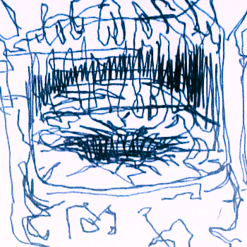

I inch towards the mouth of the pit and lean my head over it, pointing my flashlight at the bottom. It’s deeper than I imagined. It’s empty, but the floor of the pit has been painted a bright yellow. It’s barely faded, outside of some water damage. I've never been here, but it reminded me of something my teacher had said to me as a kid that made me sick to my stomach. I need to leave.